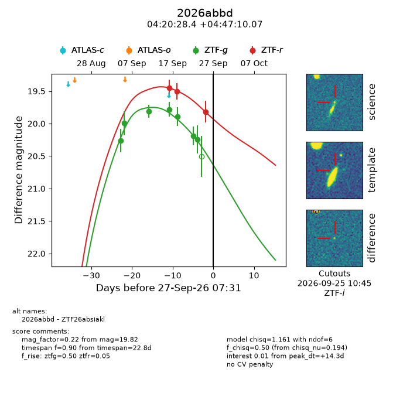
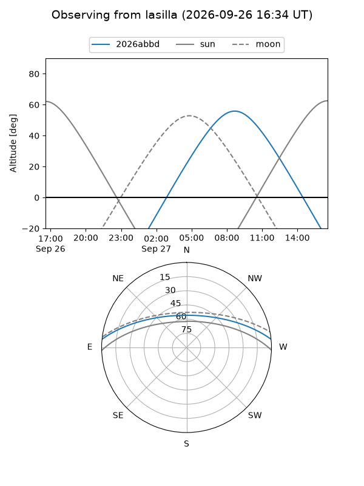
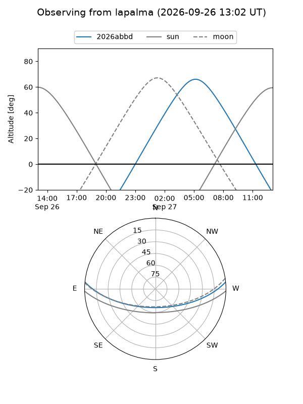
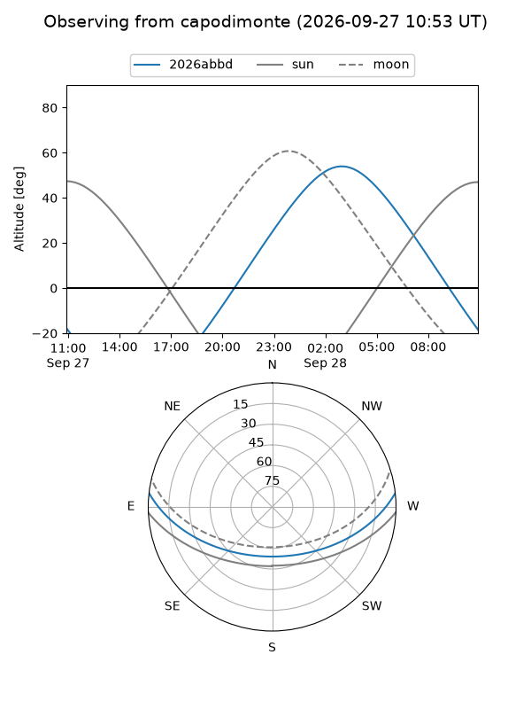
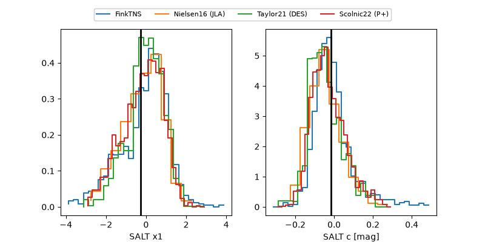

2026abbd
Target 2026abbd at 2026-09-27 07:33
Aliases and brokers:
FINK-ZTF: ztf.fink-portal.org/ZTF26absiakl
Lasair-ZTF: lasair-ztf.lsst.ac.uk/objects/ZTF26absiakl
ALeRCE-ZTF: alerce.online/object/ZTF26absiakl
YSE-PZ: ziggy.ucolick.org/yse/transient_detail/2026abbd
TNS name: wis-tns.org/object/2026abbd
Direct TNS query: direct search
alt names
ZTF26absiakl (ztf,fink_ztf)
2026abbd (tns,yse)
Coordinates:
equatorial (ra, dec) = 65.1185,+4.78613
equatorial (HMS+DMS) = 04:20:28.44,+04:47:10.07
galactic (l, b) = (188.8388,-30.31873)
Flags:
TNS type: nan
peak dt: +14.3
Photometry:
last ztfg=20.24, ztfr=19.82
7 ztfg, 3 ztfr detections
Lightcurve

Visibility



Additional plots
